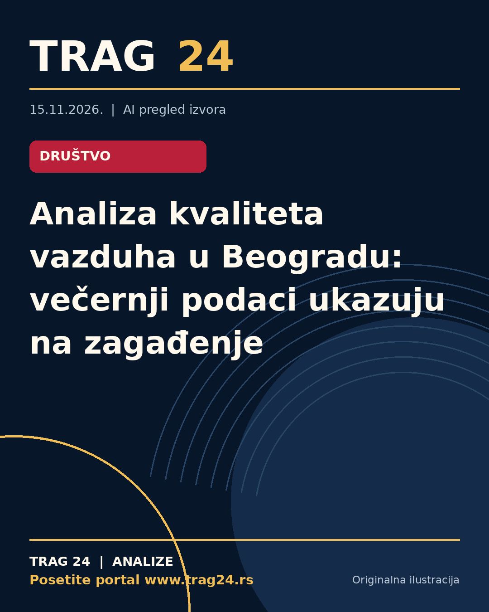

Analiza kvaliteta vazduha u Beogradu: večernji podaci ukazuju na zagađenje

ŠTA SE DOGODILO
Prema podacima sajta Beoeko, kvalitet vazduha u Beogradu između 21:00 i 21:59 časova bio je zagađen. Ukupno je registrovano 30 mernih stanica koje su pratila nivo zagađenja vazduha tokom večeri.
HRONOLOGIJA
Izveštaji se odnose na večernji period jednog dana, tačno između 21 i 22 časa, kada su zabeležene mere kvaliteta vazduha. Nije navedeno da se radi o određenom datumu niti o dužem vremenskom periodu.
ŠTA NAVODE IZVORI
Izvori Insajder i Danas slažu se u prikazanim vrednostima: na dve stanice zabeležen je status "veoma zagađen", na 14 stanica "zagađen", na 13 "umeren", dok je na jednoj stanici kvalitet vazduha bio "prihvatljiv". Prosečna vrednost kvaliteta vazduha za ceo Beograd označena je kao "zagađen". Dobijeni podaci potiču sa istog sajta Beoeko i oba medija navode identične informacije, bez dodatnih komentara ili tumačenja.
ŠTA JE POTVRĐENO
Jedinstveno je potvrđeno da je kvaliteta vazduha u večernjem periodu po informacijama Beoeko-ja bio zagađen, sa određenim stanicama koje su imale veoma visok nivo zagađenja. Broj i raspored kategorija zagađenja i broj mernih stanica saglasno su opisani u oba izvora.
ŠTA NIJE POTVRĐENO
Nijedan izvor ne navodi tačan uzrok ili posledice ovog zagađenja, niti data analiza trenda kvaliteta vazduha u vremenskom periodu pre ili posle datog večernjeg sata. Nije potvrđeno da li će zagađenje uticati na javno zdravlje ili koje će mere eventualno biti preduzete.
ŠTA OSTАJE OTVORENO: Ostaje nejasno šta je izazvalo ovu koncentraciju zagađenja i da li postoji kontinuitet takvih nivoa svakodnevno ili samo u određenim uslovima. Takođe, nije poznato da li su preduzete ili planirane mere za poboljšanje kvaliteta vazduha u Beogradu u neposrednom periodu posle ovog izveštaja.
Izvori
- https://insajder.net/prenosimo/beoeko-vazduh-u-beogradu-veceras-zagaden-na-dve-stanice-veoma-zagaden
- https://www.danas.rs/vesti/drustvo/beoeko-zagadjen-vazduh-u-beogradu/
Ova analiza je pripremljena uz pomoć veštačke inteligencije na osnovu javno dostupnih izvora. Navodi izvora nisu nužno nezavisno potvrđeni.